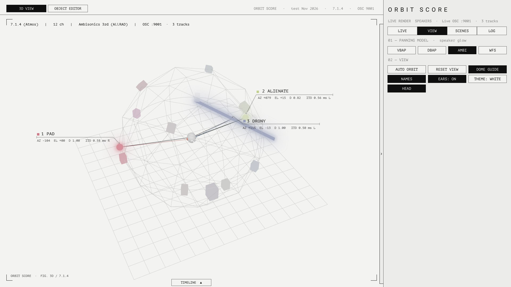
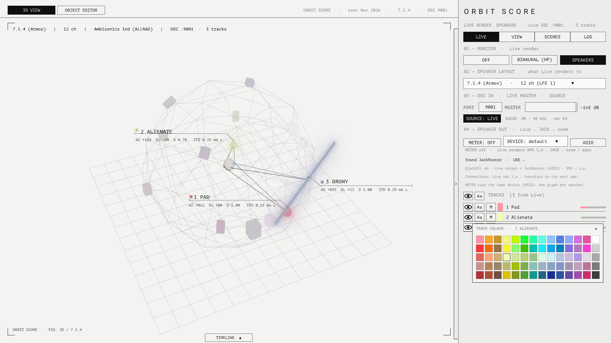
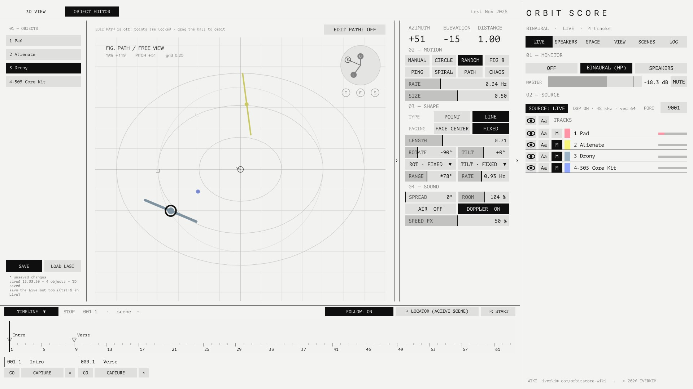
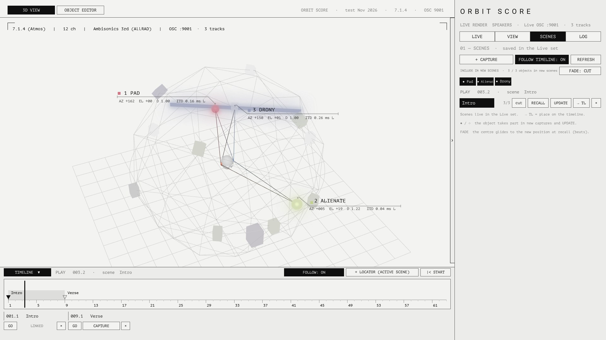

ORBIT SCORE
Each Ableton Live track becomes one sound object in space. TouchDesigner shows the objects in 3D and lets you shape how they move; Live renders the sound, binaurally for headphones or as a multichannel speaker feed that leaves through BlackHole or JACK into the room or the next application. The same object data is broadcast as OSC, so your own TouchDesigner projects can map the spatial parameters (position, level, colour, shape) onto visuals and send values back — spatial audio and spatial audiovisual work from one score.
How it fits together
There are three parts. All audio is processed inside Live and leaves Live as a multichannel feed; TouchDesigner is the screen where positions are shown and edited, and the hub that hands the spatial parameters on to other projects over OSC. Live and TouchDesigner talk only over local OSC (UDP), so Live keeps sounding exactly the same with TouchDesigner closed.
One per track. Holds position, motion, shape and path, and does its own binaural / speaker panning.
One per set. Gathers every object for TouchDesigner, passes TouchDesigner's edits back to the right object, and switches the render mode (Off / Binaural / Speakers).
A 1920 × 1080 screen: 3D preview, track list, speaker layouts, object editor and log.
Installing and first run
You will need
- Ableton Live 12 Suite (or Standard with Max for Live)
- TouchDesigner, 2025 series (the free Non-Commercial licence works)
- Headphones for binaural monitoring. Speaker mode needs a multichannel audio interface.
- For multichannel output: a virtual audio device — BlackHole (macOS) or JACK / QjackCtl (Windows) — to carry Live's speaker feeds to the interface or the next application (see below). Headphone monitoring and the 3D preview work without it.
In Live
- In Live's browser, choose Places → Add Folder… and add the
Spatialize M4Lfolder. - Put one Spatial Master in the set (the master track is a good place).
- Add a Spatial Object to every track that should be a sound object. Each one is given its own ID (UID) automatically, and it is saved with the set. A duplicated track gets a fresh UID.
- Set the Master to BINAURAL and you will hear it on headphones straight away.
In TouchDesigner
- Open the project (
.toe)./project1/Spatialize_UIis the main screen. - On the LIVE tab of the sidebar, check that PORT reads
9001. Once the tracks appear in Live's order, you are connected. - When you finish, save TouchDesigner with Ctrl+S and save the Live set as well. Paths and motion settings live in the Live set; the TouchDesigner save keeps the screen and theme settings.
Multichannel output — BlackHole / JACK
This is what the tool is for: Live renders every object onto the speaker layout (returns SPK 1 … SPK n) and that multichannel feed has to reach the room — your interface's outputs — or another application that does the final playback. A virtual audio device is the bus for that. TouchDesigner taps the same device so the 04 SPEAKER OUT section on the LIVE tab can meter every speaker feed and check the channel count against the layout. The section knows which operating system it is running on; one project file serves both.
- Install BlackHole (16ch; 64ch for dome layouts).
- Live → Preferences → Audio → Output Device = BlackHole 16ch, enable the output channels you need. Route return
SPK 1to out 1,SPK 2to out 2 … (Live's output menus on the returns). - Receiving end: the playback application, or an Aggregate Device in Audio MIDI Setup (BlackHole + your interface) so BlackHole's channels land on the interface's outputs.
- TouchDesigner, LIVE tab → 04 SPEAKER OUT → DEVICE: BlackHole 16ch, METER: ON — or press the found BlackHole 16ch · USE → badge. Same sample rate everywhere (48 kHz recommended).
- Install JACK2 for Windows (QjackCtl and the JackRouter ASIO driver included).
- QjackCtl → Setup: your interface as the JACK device, sample rate and buffer to match Live → Start.
- Live → Preferences → Audio → Driver Type ASIO, Audio Device = JackRouter. Route return
SPK 1to out 1,SPK 2to out 2 … - QjackCtl → Connections: Live's outputs → the interface's playback ports, or → the next application's inputs.
- TouchDesigner, LIVE tab → 04 SPEAKER OUT → driver ASIO, DEVICE: JackRouter, METER: ON — or the found … · USE → badge. Connect Live's outputs to TouchDesigner's inputs in QjackCtl as well so the meters see the feeds.
SPK return set-up come next (see 12).Spatial Object · Spatial Master
Spatial Object parameters
All of them are ordinary Live parameters, so you can automate them, map them to macros or drive them with modulators. The position dials (Azimuth / Elevation / Distance) set the centre of the motion.
| Parameter | Range | Meaning |
|---|---|---|
| Azimuth | −180 … 180° | 0 = front, + = left (anticlockwise), ±180 = behind |
| Elevation | −90 … 90° | 0 = ear height, 90 = straight overhead |
| Distance | 0 … 2 | 1.0 = on the speaker radius |
| Motion | 7 modes | Manual · Circle · Random · Figure 8 · Ping-Pong · Spiral · Path |
| Rate / Size | Hz / 0 … 1 | Speed and extent of the motion (not used by Path) |
| Path Length | 1 … 64 bars | Length of one pass of the path, synchronised to Live's song position |
| Path Mode | Loop · Ping-Pong · Once | How the path plays |
| Closed | Open · Closed | Whether the last point joins back to the first |
| Shape | Point · Line | A single point, or a straight line source through the centre |
| Length | 0 … 2 | Length of the line, in radius units |
| Rotate / Tilt | ±180° / ±90° | Horizontal direction / up-down tilt of the line |
| Facing | Centre · Fixed | Centre = turns with the object so it always faces the listener; Fixed = fixed in the room |
| Object (UID) | automatic | The object's unique number, saved with the set. Hidden parameter |
Spatial Master
- Mode: OFF BINAURAL SPEAKERS, the same switch as MONITOR in the TouchDesigner sidebar.
- Collects the objects' OSC and sends it to
127.0.0.1:9001; listens on9002for edits from TouchDesigner. - Track mute, master volume and track colour changed in TouchDesigner also reach Live through the Master.
The screen

Top bar
3D VIEW OBJECT EDITOR switch the centre of the screen. On the right: project name · layout · OSC port.
Moving around the 3D view
| Input | Action |
|---|---|
| Left drag | Orbit the camera |
| Wheel / middle drag | Zoom |
| VIEW tab → AUTO ORBIT | Slow automatic rotation |
| VIEW tab → RESET VIEW | Back to the default viewpoint; auto orbit starts again from there and the editor returns to TOP |
Sidebar
The right-hand panel folds away with the › button on its edge. It has three tabs.
| Tab | Contents |
|---|---|
| LIVE | Everything that talks to Live. 01 MONITOR Off / Binaural (HP) / Speakers · 02 SPEAKER LAYOUT click to open the list · 03 OSC IN · LIVE MASTER · SOURCE port (editable), MASTER volume slider, SOURCE: LIVE / DEMO, and Live's audio state (DSP, sample rate, vector size; warns if not 48 kHz) · 04 SPEAKER OUT Live's multichannel feed through BlackHole / JACK: METER on/off, device list, driver (Windows), channel count against the layout, one meter glyph per speaker, virtual-device badge · TRACKS per track: show (eye), name label (Aa), mute (M), colour, level meter |
| VIEW | Only what changes the picture. 01 PANNING MODEL · speaker glow VBAP / DBAP / AMBI / WFS · 02 VIEW dome guide, auto orbit, reset view, ears, theme, names |
| SCENES | Scene list (see 05) |
| LOG | OSC and device messages. Drag to select and copy. COPY / CLEAR / RESEND (ask Live to send its whole state again) |
Changing a track's colour

Click the colour square on a track row to open the palette. Pick a colour and both TouchDesigner and the Live track change. Click the same square again, or ×, to close it. The current colour is outlined.
Object editor

Open it from OBJECT EDITOR in the top bar. Anything you change here goes straight to the Live device's parameters, and the screen shows what the device sends back, so editing in either place gives the same result.
Viewpoint
- The TOP FRONT SIDE buttons, or the T / F / S dots at the top right of the canvas.
- Drag with the left button inside the round area at the top right (DRAG TO ORBIT) to turn the view to any angle. The F (front), L (left) and U (up) axes inside it turn too, and the caption reads FREE VIEW · YAW / PITCH.
The › button between the canvas and the settings folds the settings column away; the canvas grows. When the timeline bar is open the editor shrinks to sit above it, so SAVE / LOAD LAST stay visible.
Drawing a path
| Input | Action |
|---|---|
| Click on empty space | Add a point (the object switches to PATH motion) |
| Drag a point | Move it; its depth along the viewing direction is kept |
| Right-click | Delete a point |
| CURVE / CORNER | Toggle the selected point between curve (●) and corner (■) |
| POINT HEIGHT | Height of the selected point |
| PATH: OPEN / CLOSED LOOP | One button; click to toggle whether the last point joins back to the first |
| ALL CURVES · CLEAR · RELOAD | Make every point a curve · clear the path · read it again from Live |
Curves are Catmull-Rom (Hermite) splines, and playback moves at constant speed along the arc length. Position = Live song position ÷ (Path Length × 4 beats).
Saving
SAVE writes every object's settings to spatialize_snapshots/<time>.json and latest.json, and saves the TouchDesigner project. LOAD LAST restores the last snapshot. Save the Live set separately.
Scenes and timeline

A scene is a snapshot of every Spatial Object: position (the centre dials), motion, shape and path. Scenes are stored in the Live set, inside the Spatial Master, so they save with the set and play back with TouchDesigner closed.
SCENES tab
| Control | Action |
|---|---|
| + CAPTURE | Save the current state as a new scene |
| RECALL | Apply the scene to every object |
| UPDATE | Overwrite the scene with the current state |
| → TL | Put a locator with the scene's name at Live's playhead |
| × | Delete the scene and its locators |
| Name field | Click, type, Enter: renames the scene and its locators in Live |
Timeline bar
The TIMELINE ▲ tab at the bottom of the main view opens and closes the bar. It shows Live's arrangement locators on a bar ruler: a filled marker is linked to a scene (same name), a hollow one is not. The active scene's stretch is shaded and the line is the playhead. Click the ruler to move the playhead.
- FOLLOW: ON — when the playhead reaches a linked locator, its scene is applied. After a jump, a loop or starting mid-song, the last scene before the playhead is applied.
- Locator cards — GO jumps there; CAPTURE saves the current state under that locator's name (links it); × deletes the locator.
- Two-way — renaming a locator in Live to a scene's name links it; renaming a scene here renames its locators.
Rendering — binaural and speakers
BINAURAL (headphones)
For each object's direction, the device works out the interaural time difference (ITD) and head shadow and renders to stereo. In the 3D view the listener's ears are tinted L blue / R red, and the brightness of each line from an object to an ear shows how much of the sound reaches that ear. The ITD 0.45 ms R under a name tells you which ear hears it first, and by how much.
A Line shape is split into two binaural chains, one per end: input L → end A, input R → end B.
SPEAKERS
3D VBAP gives a gain per speaker, which the track's sends deliver to return tracks named SPK 1 … SPK n. Route each return's output to a channel of your interface. In speaker mode the object tracks' outputs switch to Sends Only.
Speaker layouts
| ID | Name |
|---|---|
| stereo | Stereo |
| quad | Quad |
| 5_1 · 7_1 | 5.1 (ITU-R BS.775) · 7.1 |
| 5_1_4 · 7_1_4 · 9_1_6 | 5.1.4 · 7.1.4 · 9.1.6 (Atmos) |
| hex6 · oct8 · ring16 | Hexagon 6 · Octagon 8 ring · Ring 16 |
| cube8 | Cube 8 |
| dome25 | Dome 25 (12 / 8 / 4 / 1) |
| wfs_line32 · wfs_rect64 | WFS line 32 (front) · WFS rectangle 64 |
Panning model · speaker glow
PANNING MODEL on the VIEW tab chooses how the speakers light up in the 3D view: VBAP-like (angle), DBAP-like (distance), Ambisonics 3rd order (AllRAD) or WFS (wavefront). A speaker box's brightness is that object's gain.
Co-ordinate systems
Distance 1 = speaker radius. Azimuth + = left, Elevation + = up.
Right = +X. Converted by aed_to_dev / dev_to_aed in the layouts module.
Line source: centre c = aed_to_dev(az, el, d), horizontal heading h = (az if Facing is Centre, 0 if Fixed) + 90° + Rotate, tilt t = Tilt, direction u = (cos t·cos h, cos t·sin h, sin t), ends c ± u·Length/2.
OSC messages
All local UDP. Live → TouchDesigner on 127.0.0.1:9001; TouchDesigner → Live (Spatial Master) on 9002.
Live → TD (9001)
| Address | Carries |
|---|---|
| /spat/obj | Object position, level and colour (about 30 Hz) |
| /spat/name | Track name and Live track order |
| /spat/form | Motion and shape settings (motion, shape, len, rot, tilt, rate, size, bars, pmode, muted, facing, closed) |
| /spat/path | Stored path points |
| /spat/off | Sent when a device is removed |
| /spat/master | Master state (render mode and so on) |
| /spat/audio | DSP on/off, sample rate, vector size (every 2 s) |
| /spat/scenes | Follow flag, active scene, scene names |
| /spat/cues | Song length, time signature, locators (name, beat) |
| /spat/play | Playing flag and playhead (beats) |
| /spat/sceneon | A scene was applied |
| /spat/dbg | Debug messages → LOG tab |
TD → Live (9002, Spatial Master)
| Address | Carries |
|---|---|
| /spat/setmode | 0 Off · 1 Binaural · 2 Speakers |
| /spat/spk | Speaker layout (unit vectors + LFE flag) |
| /spat/color | <id> r g b → Live track colour |
| /spat/objset | <uid> <key> <value> parameter change · <uid> mute 0|1 · 0 mastervol <dB> · <uid> az|el|dist <v> |
| /spat/pathset | <uid> <n> x y z c … store a path |
| /spat/req | Send the whole state again (LOG → RESEND) |
| /spat/scene | save <name> <data> · recall · del · rename · cue · cuedel · jump · jumpt <beats> · follow 0|1 · sync |
| /spat/info | Information request |
# e.g. set object 598428's motion to Circle
/spat/objset 598428 motion 1
# a three-point path (x y z curve)
/spat/pathset 598428 3 0.8 0.4 0.0 1 -0.2 0.9 0.3 1 -0.7 -0.5 0.0 0Driving other projects — OSC out and the Orbit Link tox
The second purpose of the tool: the spatial parameters that drive the sound — position, azimuth / elevation / distance, level, colour, shape — are broadcast as plain OSC, so your own TouchDesigner project (or anything that speaks OSC: Max, Unity, Resolume…) on the same computer or elsewhere on the network can map them onto visuals, and the same spatial score drives sound and image. The other direction works too: a project can push positions and settings back into the Live devices, so a visual system or a sensor can move the sound.
Orbit Score side
Parameters on Spatialisation_test (Objects page):
| Parameter | Default | Meaning |
|---|---|---|
| OSC Out Enable | on | Broadcast on / off |
| OSC Out Host · Port | 127.0.0.1 · 9010 | Where the stream goes. For another computer, its IP address |
| OSC Out Rate | 30 Hz | Messages per second |
| OSC Set In Enable · Port | on · 9011 | Listens for /orbit/set/… from other projects |
Broadcast — /orbit/… (→ 9010)
n is the object's number in Live's track order (1-based), the same order as the TRACKS list. The TD frame is right = +X, up = +Y, front = −Z, radius 1 = the speaker ring.
| Address | Arguments |
|---|---|
| /orbit/n/name | track name |
| /orbit/n/pos | x y z (TD frame) |
| /orbit/n/aed | azimuth elevation distance (° ° radius) |
| /orbit/n/color | r g b (0 … 1) |
| /orbit/n/level | track level 0 … 1 |
| /orbit/n/shape | 0 point · 1 line |
| /orbit/count | number of objects |
| /orbit/layout | layout id, speaker count |
Set — /orbit/set/… (→ 9011)
Anything received here is forwarded to the Live device as /spat/objset, exactly like an edit in the object editor, so it ends up in the Live set. A position only shows while that object's motion is MANUAL — send /orbit/set/n/motion 0 once first.
| Address | Arguments |
|---|---|
| /orbit/set/n/pos | x y z (TD frame; converted to az / el / dist) |
| /orbit/set/n/aed | azimuth elevation distance |
| /orbit/set/n/az · el · dist | one component |
| /orbit/set/n/<key> | motion · rate · size · bars · pmode · shape · len · rot · tilt · facing · closed |
Orbit Link (.tox)
OrbitLink.tox is a drop-in component for the other project. It opens one socket for the whole stream and turns it into tidy CHOP channels you can reference from any custom parameter — no OSC parsing in the receiving project.
out1 (CHOP): count, then per object o1_x o1_y o1_z · o1_r o1_g o1_b · o1_level · o1_az o1_el o1_dist · o1_shape. names_out (DAT): n, name, shape, r g b. Bind a parameter with op('orbit_link/out1')['o1_x'] or drag the channel onto it.
Parameters: Port (9010), Active, Max Objects, Smooth (s), Signal Timeout; read-only Status (3 objects · live), Objects, Speaker Layout.
Wire a CHOP into in1 with channels named like the output — o2_x o2_y o2_z or o2_az o2_el o2_dist, plus any o2_motion, o2_rate, … — and turn on Send Enable. Only changed values are sent, at Send Rate (30 Hz), to Orbit Score Host : Set Port (9011).
The test Audiovisual project is the worked example: three bouncing spheres stand on the objects' floor positions in the track colours, hop higher with the track level and squash on landing. Its Room, Bounce, Speed, Ballsize and Glow parameters are plain custom parameters fed from the tox.
Themes and display
The same design with paper and ink swapped. THEME button on the VIEW tab.
The UI, the track names and the 3D-view HUD all share one typeface.
A soft blur in each object's own colour, line sources included. Spatialisation_test → Theme → Object Haze (default 2.5; 0 turns it off).
- Track names: a diagonal leader from the object to a fine horizontal rule, with a colour square and the name above and AZ EL D ITD below. Callouts of nearby objects move out of each other's way, and flip sides near the edge of the screen.
- Dome guide: dashed lines. Spacing is
DASH, GAPat the top of thegeo_dome/dome_dashscript. - Listener: a grey head model with L/R-coloured ears, and closed eyes and a mouth drawn in white line. Every 3.2 seconds the mouth may change between neutral, a smile, an "o" and a yawn (
SLOTandWEIGHTSingeo_eyes/eyes). - Brightness: each object's brightness follows its track level after the fader, using the dB map
(20·log10(a) + 48) / 48.
Troubleshooting
| Symptom | Fix |
|---|---|
| Tracks don't appear in TD | Check PORT = 9001 on the LIVE tab and that a Spatial Master is in the set. Press RESEND on the LOG tab. |
| Editor says "old Spatial Object" | That track has an earlier version of the device. Close and reopen the Live set, or insert the device again. |
| Position jumped back to 0 | This can happen right after the device script reloads. Reopening the set brings back the saved values. |
| Two objects share a number | Duplicated tracks get a new UID automatically. If they still clash, delete the device and add it again. |
| TD buttons look blank or white | Reopen the project. The UI refreshes on Uitick (10 Hz), so that parameter must exist. |
| No sound in speaker mode | Check the returns are named SPK 1 … SPK n, that each return is routed to an interface channel, and that Live's output channels are enabled. |
| Orbit Link says "no signal" | OSC Out Enable on in Orbit Score, host = the receiving computer, same port both sides, nothing else holding that port. |
| A position sent with /orbit/set doesn't show | The object is still on Circle / Path / …; send /orbit/set/n/motion 0 (MANUAL) first. |
| SPEAKER OUT shows 1 ch · "layout needs 10 ✗ short" | The default device is selected, or the virtual device has fewer channels than the layout. Pick BlackHole / JackRouter, enable enough channels, match Live's sample rate. |
What's next
- Scene crossfades: blend positions over a set time instead of switching at the locator.
- Per-scene object selection: leave some objects out of a scene.
- Output channel check: warn when Live's audio device has fewer output channels than the chosen speaker layout needs (5.1.4 = 10, Dome 25 = 25). SPEAKER OUT already compares against the device TouchDesigner sees; next, the Spatial Master reports the output channels Live actually has enabled.
- Speaker routing: speaker → output channel map in the LAYOUT list and automatic
SPK 1 … nreturn set-up in Live. (Tracks are not mapped to channels: every object is spread over all speakers by the panner, so the per-track meters stay with the M4L device.) - Orbit Link: a per-object select mode, and sending scene recalls from the other project.
Changelog
| Date | Changes |
|---|---|
| 2026.11.10 | v7.2: OSC broadcast of every object (/orbit/…), OSC set-in (/orbit/set/…), Orbit Link tox (receive + send) with the test Audiovisual example · SPEAKER OUT section (BlackHole / JACK multichannel output, OS-aware, device list, channel check, per-speaker meters) · LIVE / VIEW tabs reorganised · single PATH: OPEN / CLOSED LOOP toggle · leader lines, far path points and loop recall fixed · editor fits above the timeline bar · RESET VIEW restarts auto orbit |
| 2026.11.09 | v7.1: scenes stored in the Live set, timeline bar linked both ways with Live locators, audio status, haze for line objects, callouts avoid each other, collapsible editor settings |
| 2026.11.08 | Free orbit view in the editor · redesigned track-name callouts · object haze · Ableton 70-colour palette · dashed dome · grey head model with expressions · unified typeface and sizes · this wiki |
| 2026.11.08 | v7: seven motion modes, Line shape (length, rotation, tilt, facing), path editing (open / closed), UIDs, track mute and master volume, object editor moved into the main UI |
| 2026.11 | Graphic-score themes (White / Black), sidebar tabs (LIVE / VIEW / LOG), collapsible sidebar, layout list, monitor selector |